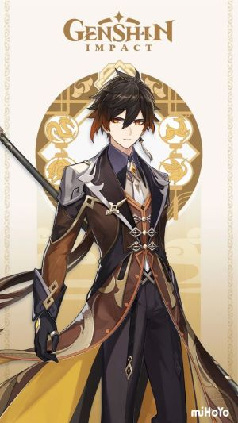

Zhongli is a calm, reserved, and polite man, who holds an air of nostalgia. Whereas he is said to have a stoic demeanor for duty, Zhongli also has a sentimental side. He knows much about Liyue history and culture in part due to his time as the Geo Archon; like Venti, he has many experiences and memories, as he was a god well before The Seven even existed and one of the oldest still living in Teyvat. He holds philosophical ideas towards money and has great respect for Liyue's traditions, including those that have been forgotten or warped over time. Zhongli tends to be humble, being worried he comes off as a "bourgeois parasite."
Zhongli tends to forget about Mora in transactions, agreeing to spend large sums of it without having any Mora on hand and even taking "discounts" as granted despite being an obvious scam. He often ends up relying on his acquaintances for financial support, such as the Wangsheng Funeral Parlor or Childe. Although he works for Hu Tao, he does not like her childish behavior.
It is later revealed that Zhongli's "carelessness" stems from being the creator of Mora. With the Gnosis allowing him to create limitless Mora, he never had to worry about running low on his personal finances. Unfortunately, when he chose to live among mortals, he lacked the foresight to find an alternative for them to continue minting Mora in his absence, along with creating a retirement fund for himself. As a result, he shamelessly spends the Mora of others.
Being the reminiscent person he is, Zhongli enjoys Osmanthus wine as it was the drink he and his former Archon friends used to have when they met up in Liyue. He dislikes seafood as it reminds him of the promise he made to his people in the past when he fought a particularly annoying type of sea creature, although he does not mind eating them if they have been ground to a pulp.
Zhongli uses the tall male model. He has fair skin, amber eyes with yellow diamond-shaped pupils and red eyeliner on the lower lids of his eyes, and mostly short dark brown hair with a longer fringe on the right side of his face and Geo-amber tips that glow when he uses his Elemental Skill or Elemental Burst. There is one section of his hair on the back of his head that is waist-length instead of being cut short.
Zhongli's form appears to be the same as the one he uses as an Archon, as seen in his Statues of The Seven and various cinematics that show him as an Archon.
In Liyue, if a person pays great attention to details, and has insuperable criteria by which they judge certain matters, then they are called "particular."
In truth, everyone is "particular" about something. Some people hate spicy food, others don't eat fish, and some want their tofu served sweet...
But as for Zhongli, he is particular about everything.
He attends operas performed by only the most celebrated stars, takes only the most luxuriant thrushes out for walks, and he goes into the kitchen personally to instruct the cooks as to the ratio of shrimp and fish required to make the most authentic Fullmoon Egg.
Zhongli has expertise in all manner of things, from fashion to daily essentials, to fine wines and delicacies, to teas and spices, and to flora and fauna. He is also more than capable of participating in discussions on commerce, politics, and international relations.
But on a typical day, all you will glean from him is a few pieces of useless trivia, because he particularly enjoys sharing these fun tidbits with you.
When making a purchase, look to haggle.
This is a common understanding among the people of Liyue. No matter what high heavens the store owner praises their product to, no matter its ancient history or classical value, prices are always flexible. Half the stated cost is a good place to start.
But when Zhongli pays up (or rather, calls for someone else to pay up on his behalf), he never looks at the price tag. As long as it catches his eye, Zhongli will pay as much as the owner asks. Indeed, he will even buy it at a premium sometimes.
But for some reason, Zhongli always forgets to bring money.
For small purchases, he has friends to help him out, and large bills he somehow finds ways to have written off.
To those merchants who secretly pride themselves on their powers of flattery, Zhongli is a man of strange proclivities: in truth, he knows a great deal about the value of money and finance, and he also understands the suffering of the people. However, he seems to not understand that poverty is part of the human condition.
Or perhaps it might be said that he cannot imagine himself being poor.
How has such a person not died of hunger yet?
There is no way Zhongli can starve.
Such concerns as profit and loss are beneath his notice. The Seven Nations and the world itself are where his efforts are directed.
As for wealth... He is wealth itself.
He is Morax, the overlord Rex Lapis who rules Liyue, and the Geo Archon of the Seven Archons. The very money that circulates throughout Teyvat, Mora, is named after him.
As the founder of Liyue Harbor, "contracts" are the most important thing to Morax.
From simple monetary exchange and agreements between merchants to the ancient laws that Morax himself laid down, there is no part of city life untouched by "contracts."
To merchants, "contracts" are the most important standard to which they hold themselves: deadlines, invoices, shipping destinations... Only a refined and strict order can sustain vibrant commerce, which is itself the lifeblood of Liyue Harbor.
Thus the Qixing punish violators of such laws unceasingly, not only to uphold the divine rulings of Morax but also to allow Liyue to maintain its vitality.
From Official Genshin Impact Website:
Wangsheng Funeral Parlor's mysterious consultant. Handsome, elegant, and surpassingly learned.
Though no one knows where Zhongli is from, he is a master of courtesy and rules. From his seat at Wangsheng Funeral Parlor, he performs all manner of rituals.